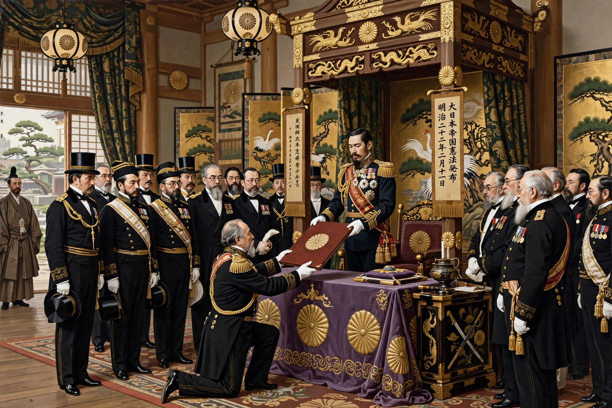

| Constitution of the Empire of Japan | |
|---|---|
 Promulgation of the constitution, 11 February 1889 | |
| Created | 1888 (presented to the emperor) |
| Promulgated | 11 February 1889 |
| Effective | 29 November 1890 |
| Repealed | 3 May 1947 |
| Signatories | Emperor Meiji |
| Purpose | Establish a constitutional monarchy under imperial sovereignty |
The Constitution of the Empire of Japan (大日本帝国憲法), known informally as the Meiji Constitution, was the constitution of the Empire of Japan from 29 November 1890 until 2 May 1947. Enacted as a form of mixed constitutional and absolute monarchy, it was promulgated by Emperor Meiji in 1889 and made the emperor the sacred and inviolable sovereign in whom all authority was vested, while creating an elected lower house of the Imperial Diet.
After the Political Crisis of 1881, the emperor promised a constitution by 1890. Itō Hirobumi led a mission to Europe in 1882–83 to study constitutional systems, spending most of his time in Berlin and Vienna; the Prussian and Austrian models, emphasizing monarchical authority, strongly influenced the draft. The constitution was drafted in secrecy in 1887–88 by Itō and a small team including Inoue Kowashi and the German adviser Hermann Roesler, then reviewed by the newly created Privy Council rather than debated in public.
The constitution consists of 76 articles in seven chapters. Chapter I defines the emperor as head of the Empire, combining in himself the rights of sovereignty, sacred and inviolable, supreme commander of the army and navy, and empowered to declare war, conclude treaties, and issue emergency ordinances. Chapter II grants subjects rights — freedom of movement, speech, religion, and property — but each qualified "within the limits of law." The Imperial Diet consisted of an elected House of Representatives and an aristocratic House of Peers; the Diet's consent was required for legislation and budgets, but if it rejected a budget, the previous year's budget continued in force, limiting its leverage.
The cabinet was responsible to the emperor, not the Diet, and the military services enjoyed direct access to the throne — the "independence of the supreme command," which in the 1930s allowed the armed services to act beyond civilian control. Amendments could only be initiated by the emperor, and none were ever made.
In practice, during the era of party cabinets in the 1920s ("Taishō democracy"), the constitution functioned in a broadly parliamentary fashion, with the theory of the emperor as an "organ of the state" advanced by Minobe Tatsukichi. After Japan's defeat in the Second World War, the document was replaced in 1947 by the postwar Constitution of Japan, technically enacted as an amendment but transforming sovereignty to the people and reducing the emperor to a symbol. The Meiji Constitution remains the foundation document of Japan's modern constitutional tradition.